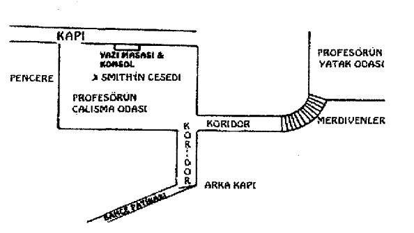

1894 yılında yaptığımız çalışmaların dökümünü içeren ve üçü de birbirinden kalın olan kitaplara baktığım zaman, o denli zengin malzemenin içinden en ilginç olmalarının yanı sıra dostumun ününü oluşturan özelliklerini yansıtmak bakımından en elverişli olan öyküleri seçmenin benim için son derece zor olduğunu itiraf etmek zorundayım. Sayfaları çevirince, kırmızı sülükle ilgili iğrenç hikâyenin yanı sıra bankacı Crosby'nin korkunç ölümüyle ilgili notlarıma rastlıyorum. Ayrıca Addleton trajedisinin bir dökümü ve İngiliz, antik el arabasının eşi benzeri görülmemiş yükü de yerini almış burada. Smith -Mortimer'ın ünlü vekâlet davası da bu döneme denk geliyor; bulvar suikastçısı Huret' in bulunup tutuklanışı da öyle- ki bu dava, Holmes'a Fransa'nın Başkanından imzalı bir teşekkür mektubu ve Onur Nişanı kazandırmıştı. Bu vakaların her biri güzel bir hikâye oluşturur, ama bana yine de öyle geliyor ki, genç Willoughby Smith'in kınanacak ölümünün yanı sıra, cinayet nedeninin ortaya çıkmasını sağlayan garip olaylar zinciri bakımından, Eski Yer Yoxley kadar ilginç noktalar içermiyor hiçbiri.
Kasımın sonlarına doğru, fırtınalı, korkunç bir geceydi. Holmes'la beraber sessizlik içinde oturarak geçirmiştik bütün akşamı -o, elinde güçlü bir büyüteçle eski bir parşömenin yazılarını deşifre etme işine girişmiş, bense cerrah üzerine yeni bir incelemede kaybetmiştim kendimi. Dışarıda, Baker Sokağı rüzgâra terk edilmiş, yağmur da pencerelerimizi indirmekle tehdit ediyordu adeta. Etrafımız en azından yirmi kilometre boyunca insan yapımı binalarla çevriliyken şehrin ortasında bile doğanın inanılmaz gücünü hissetmek, o güç söz konusu olduğunda koca Londra'nın, küçücük, önemsiz bir tepecik olduğunu fark etmek insanın içini ürpertiyordu. Pencereye yürüyüp terk edilmiş sokağa baktım. Çamurlu caddeyle parlayan kaldırımların birleştiği yerde sokak lambaları etraflarını aydınlatmak için çabalıyordu. Oxford Caddesinin köşesinden dönmüş yalnız bir arabadan başka bir tek hayat belirtisi yoktu etrafta.
"Evet, Watson, iyi ki bu gece dışarı çıkmak zorunda değiliz," dedi Holmes, büyütecini yana koyup parşömeni bir rulo haline getirirken. "Bugünlük bu kadar çalışma yeter. Gözleri yoran bir iş bu. Şimdilik çıkardığım kadarıyla on beşinci yüzyılın ikinci yarısında bir manastırın kayıtlarından daha heyecanlı bir şey değil. Vay vay vay! Bu da ne?"
Rüzgârın ıslıklarının arasından yoldan yukarı gelen at nallarının sesi ve kaldırım taşlarına sürtünen bir tekerleğin iniltisi duyuluyordu. Görmüş olduğum araba kapımızın önüne çekmişti.
"Ne istiyor olabilir?" diye atıldım heyecanla, arabanın içinden bir adam çıktığı sırada.
"Ne mi istiyor? Bizi tabii ki. Ve biz, sevgili Watson, biz de iki palto, iki atkı ve çizme istiyoruz; böyle bir havayla savaşmak için insanoğlu ne icat ettiyse hepsini. Yo, bekle biraz! Araba yine yola çıktı! Hâlâ umut var. Gelmemizi isteyecektiyse arabasını mutlaka bekletirdi. Aşağıya koş, sevgili dostum ve kapıyı aç, çünkü erdemli tüm insanlar çoktan yataklarına çekilmiş durumda!"
Holdeki lambanın ışığı gece ziyaretçimizin üzerine düştüğünde onu tanımakta hiç zorlanmadım. Genç Stanley Hopkins, Holmes'ün defalarca yardım etmiş olduğu yetenekli bir polis müfettişiydi bu.
"Holmes içeride mi?" diye sordu genç adam heyecanla.
"Yukarı gel, beyefendi," diye seslendi Holmes yukarıdan. "Umarım bu kadar kötü bir gecede bizim için özel planların yoktur."
Müfettiş yukarı çıktı ve ben, lambamızın ışığımızda parıldayan yağmurluğunu çıkarması için yardım ederken Holmes şöminedeki odunları canlandırdı.
"Evet, sevgili Hopkins, şömineye yaklaş da ayaklarını ısıt," dedi Holmes. "Bir puro al, doktor da böyle bir gecede insana ilaç gibi gelen sıcak su ve limondan oluşan özel karışımından hazırlasın sana. Bu kadar korkunç bir fırtınada dışarı çıktığına göre çok önemli bir şeyler gerçekleşmiş olmalı."
"Son derece önemli Bay Holmes. Çok yoğun bir gün geçirdim inanın bana. Son baskıda Yoxley vakasıyla ilgili bir şeylere rastladınız mı?"
"Bugün on beşinci yüzyıldan gelen bir belgeden daha yeni hiçbir şey görmedim."
"Pekâlâ, sadece bir paragraftı, üstelik hepsi de uydurmaydı, yani hiçbir şey kaçırmadınız. Bugün bir saniye bile durup dinlenmedim. Yoxley, Chatham'dan yedi mil ötede ve tren istasyonundan üç mil içeride Kent'te yer alıyor. Üçü çeyrek geçe oraya gitmem gerektiğine dair bir telgraf aldım, saat beşte Eski Yer Yoxley'deydim, araştırmamı tamamladım, son trenle Charing Cross'a geri döndüm ve hemen bir araba tutup buraya geldim."
"Bunun anlamı da, yanılmıyorsam eğer, vakayla ilgili bir karara varamamış olduğundur, öyle mi?"
"Bunun anlamı hiçbir şey anlamadığımdır. İzlenimlerime göre şimdiye kadar el attığım en karmâşık iş; oysa ilk başta, hata yapmanın mümkün olmadığı kadar basit görünmüştü gözüme. Bir cinayet nedeni yok Bay Holmes. Canımı sıkan şey bu -hiçbir sebep bulamıyorum. Adamın biri ölmüş -buna hiç şüphe yok- fakat herhangi birinin ona bir zarar vermeyi istemesine sebep olacak hiçbir şey bulamadım."
Holmes purosunu yakıp koltuğunda arkasına yaslandı.
"Bütün hikâyeyi anlat bakalım," dedi.
"Bulgular oldukça açık," diye başladı Stanley Hopkins. "İstediğim tek şey her birinin ne anlama geldiğini öğrenmek. Hikâye, benim bildiğim kadarıyla şöyle. Bu kır evi, 'Eski Yer Yoxley,' birkaç yıl önce, Profesör Coram adında yaşlıca bir adam tarafından satın alındı. Kendisi sakat ve vaktinin yarısını yatakta geçirirken diğer yarısını da ya bir baston yardımıyla evin içinde topallayarak, ya da bahçıvanın ittiği tekerlekli sandalyesinde bahçeyi dolaşmakla geçirir. Kendisine uğrayan komşuları tarafında sevilen biridir ve okumuş bir adam olmasıyla tanınır. Bayan Marker adında yaşlıca bir kâhya ve Susan Tarlton adındaki hizmetçisiyle yaşıyor. Kadınların ikisi de adamın oraya yerleşmesiyle birlikte gelmiş ve mükemmel karakterlere sahip insanlarmış gibi görünüyor. Profesör bir kitap yazmakla uğraşıyor ve bir yıl kadar önce kendisine yardımcı olacak bir sekreter tutma ihtiyacı hissetmiş. Denediği ilk iki kişi başarılı olamamış, ama üçüncüsünün, üniversiteden yeni mezun olmuş genç bir adam olan Bay Willoughby Smith'in, tam da patronunun aradığı kişi olduğu ortaya çıkmış. İşi, profesörün sabahları dikte ettiklerini yazmaktan ibaretti ve akşamlarını genellikle ertesi günkü çalışmalarıyla ilgili kaynaklar ve yazılar araştırıp bulmakla geçirirmiş. Ne Uppingham'de geçirdiği çocukluğunda, ne de genç bir adam olarak Cambridge'de yaşadığı yıllarda kötü herhangi bir şey yapmamış Willoughby Smith.
Onu araştırdım ve görünüşe göre en başından beri, içinde tek bir kötülük olmayan sessiz ve çalışkan biriymiş. Evet, buna rağmen, delikanlı, bu sabah profesörün çalışma odasında ölümüyle karşılaşmış bulunuyor -cinayet işlenmiş efendim."
Rüzgâr pencereleri sarsarak inliyordu. Holmes ve ben, müfettiş ilginç hikâyesini yavaş yavaş anlatmaya devam ederken ateşe iyice sokulduk.
"İngiltere'yi baştan aşağı arayacak olsan bile," dedi, "bu ev kadar dış etkenlerden korunmuş, kendi kendine yetebilen bir yer daha bulabileceğini sanmıyorum. Ev halkı adımlarını bahçenin kapısının ötesine atmadan haftaların geçtiği olurdu. Profesör çalışmalarına gömülmüş ve başka bir şey için yaşamayan bir adam. Genç Smith, civarda hiç kimseyi tanımıyordu ve az çok patronu gibi bir yaşam sürdürüyordu. Evin iki kadın çalışanının onları evden dışarı çıkaracak hiçbir işleri yoktu. Bahçıvan olan ve profesörün tekerlekli sandalyesini iten Mortimer da ordudan emekli olmuş, mükemmel bir kişiliğe sahip yaşlı bir Kırımlıdır. Evin içinde değil, bahçenin bir ucunda bulunan üç odalı bir kulübede yaşıyor. Eski Yer Yoxley'de bulacağınız insanlar bunlardan ibaret işte. Bahçenin kapısı London-Chatham yolunun yaklâşık yüz metre uzağında bulunuyor bu arada. Bir kapı mandalıyla açılıyor ve insanları araziden uzak tutacak hiçbir şey yok.
"Olayla ilgili herhangi bir şey söyleyebilen tek kişi olan Susan Tarlton'dan öğrendiğim kadarıyla hemen öğlenden önce, on birle on iki arasında bir vakitte kendisi üst kattaki yatak odalarından birinde perde asma işiyle meşgulmüş. Profesör Coram henüz yatıyormuş; havalar kötü olunca öğlenden önce kalktığı görülmezmiş pek. Evin kâhyası da arka tarafta bir işler yapıyormuş. Willoughby Smith oturma odası olarak kullandığı yatak odasında biliniyordu ama hizmetçi o anda holden geçtiğini, hemen altta bulunan çalışma odasına indiğini duymuş. Hizmetçi, Smith'i görmemiş fakat genç adamın hızlı, enerjik adımlarını nerede duysa tanıyacağını söylüyor. Çalışma odasının kapısının kapandığını duymamış, ama bir iki dakika kadar sonra korkunç bir çığlık duyulmuş alttaki odadan. Dehşet verici, tüyler ürpertici bir çığlıkmış, bir kadından mı bir adamdan mı geldiği bile belli olmayan garip bir haykırış. Aynı anda, bütün evi sarsacak kadar ağır bir şeyin yere düşme sesi duyulmuş, ardından ortalığı tam bir sessizlik kaplamış. Hizmetçi bir an için korkudan donakalmış, sonra, cesaretini toparladığında hemen aşağı kata koşmuş. Çalışma odasının kapısı kapalıymış ve kadın onu açmış. Genç Willoughby Smith, uzunlamasına yerde yatıyormuş içeride. Hizmetçi ilk başta hiçbir yara görememiş, fakat adamı ayağa kaldırmayı çalışırken boynunun altından kanların fışkırdığını görmüş. Şahdamarını parçalamış olan küçücük, fakat çok derin bir yara varmış adamın boynunda ve yarayı açmış olan alet de hemen yanında, halıda duruyormuş. Eski tip yazı masalarında bulunan, sapı fildişinden olan balmumu bıçaklarından biriydi bu -Profesörün çalışma masasının kendi takımına ait bir parça.
"Hizmetçi ilk önce genç Smith'in çoktan ölmüş olduğunu düşünmüş fakat odadaki sürahiden aldığı biraz suyu adamın alnına döktüğünde birkaç saniyeliğine de olsa gözlerini açmış. 'Profesör,' diye mırıldanmış, 'o kadındı.' Hizmetçi, Smith'in son sözlerinin bunlar olduğuna yemin ediyor. Adam umutsuzca başka bir şeyler söylemeye çalışmış, elini havaya kaldırmış. Sonra kafası arkaya düşmüş; ölmüş.
"Bu sırada artık kâhya da varmış cinayet sahnesine, ama o genç adamın son sözlerini duymak için geç kalmış. Susan' ı cesetle bırakarak hemen profesörün odasına koşmuş. Profesör, çok heyecanlı bir halde yatağında oturuyormuş, çünkü evin içinde korkunç bir şeylerin olmuş olduğunu anlayacak kadar ses duymuştu. Bayan Marker, Profesörün hâlâ pijamalarının içinde olduğuna yemin ediyor ve işin gerçeği şu ki saat on ikide gelme emrini almış olan Mortimer'in yardımı olmadan da giyinmesi imkânsız. Profesör, uzaktan gelen çığlığı duyduğunu, fakat başka bir şey bilmediğini söylüyor. Genç adamın son kelimelerine, 'Profesör, o kadındı,' hiçbir açıklama getiremiyor, ölmeden önce genç adamın sayıklaması olduğunu düşündüğünü ifade ediyor. Willoughby Smith'in bu dünyada tek bir düşmanının olmadığına inanıyor ve cinayetin sebebini anlayamıyor. Profesörün ilk tepkisi bahçıvan Mortimer'ı polis çağırmaya yollamak olmuş. Çok geçmeden de amir beni çağırttı. Ben oraya ulaşmadan hiçbir şeye dokunulmamıştı ve hiç kimsenin evin patikasında yürümemesi gerektiğine dair emir verdim. Sizin teorilerinizi uygulamaya sokmak için harika bir fırsattı Bay Sherlock Holmes. Hiçbir eksiklik yoktu."
"Bay Sherlock Holmes dışında tabii," dedi dostum, acı bir gülümsemeyle. "Peki, sonra neler oldu? Anlat bize."
"Öncelikle sizden şu taslağa bakmanızı istemek zorundayım, Bay Holmes. Bu, profesörün çalışma odasının yerini ve vakada adı geçen çeşitli yerlerin pozisyonlarını gösteriyor. Yaptığım araştırmaları anlamanızda size yardımcı olacaktır."
Bunun üzerine, aşağıda yer alan kaba haritayı açıp onu Holmes'a verdi. Ben de ayağa kalkıp Holmes'ün omzunun üzerinden haritayı incelemeye koyuldum.
"Çok kaba bir harita tabii, ve sadece benim önemli bulduğum noktaları içeriyor. Gerisini daha sonra kendiniz gelip görürsünüz. Şimdi, öncelikle katilin dışarıdan gelen biri olduğunu varsayalım; içeri nasıl girmiştir? Tabii ki bahçe patikasını ve arka kapıyı kullanmıştır, çünkü oradan doğrudan çalışma odasına gidiliyor. Diğer tüm yollar fazlasıyla karmâşık olacaktı. Kaçışın da aynı kapıdan gerçekleşmiş olması gerekir, zira diğer iki çıkışın biri yukarıdan aşağı inen Susan tarafından bloke edilmişti ve diğeri de doğrudan Profesörün odasına gidiyor. Bunlara dayanarak dikkatimi bahçe patikasına yönelttim ve orası da sürekli yağan yağmurdan dolayı bir çamur yığınına dönmüş olduğu için herhangi bir ayak izini çok net olarak gösterecekti.

"Yaptığım araştırma, dikkatli, hatta uzman bir suçluyla karşı karşıya olduğumu gösterdi. Patikada bir tek ayak izi yoktu. Ne var ki izlerini bırakma tehlikesinden kurtulmak isteyen birinin patikanın kenarında bulunan çimenlerde yürümüş olduğu çok açıktı. Belli bir ize benzer hiçbir şey bulamadım, ama çimenler ezilmişti; birilerinin oradan geçtiği belliydi. Bu bir tek katilin kendisi olabilirdi, çünkü ne bahçıvan ne de evin bireylerinden birileri o sabah oraya uğramıştı ve yağmur da o gece başlamıştı."
"Bir dakika," dedi Holmes. "Bu patika nereye gidiyor?"
"Yola çıkıyor."
"Uzunluğu ne kadar?"
"Yüz metre kadar efendim."
"Patikanın bahçe kapısından çıktığı noktada izleri tekrar bulmuş olmalısın, değil mi?"
"Ne yazık ki bulamadım, oradan itibaren taş döşeli bir yol halini alıyor."
"Peki, yolun kendisinde?"
"Hayır; yol bir çamur gölüne dönmüştü."
"Yazık, çok yazık! Neyse, çimenlerdeki bu adımlar, gidiyorlar mıydı, geliyorlar mıydı?"
"Bunu söylemek imkânsızdı. Belli bir şekilleri yoktu."
"Küçük mü büyük müydü ayaklar?"
"Bunu da belirleyemezdin."
Holmes sabırsız bir ses çıkardı.
"O zamandan beri de yağmur deliler gibi yağıyor, fırtına rüzgârları esip duruyor," dedi. "Artık şuradaki parşömenden bile daha zor okunacaklar. Neyse, bu konuda yapabileceğimiz hiçbir şey yok. Peki Hopkins, sonra ne yaptın? Hiçbir şeyi kesinleştirememiş olduğundan kesinlikle emin olduktan sonra yani?"
"Bana kalırsa birçok şeyi kesinleştirdim Bay Holmes. Birinin, dikkatli davranan birinin eve girmiş olduğunu biliyordum. Ondan sonraki adımım da koridoru incelemek oldu. Orası hindistancevizi halısıyla örtülü ve hiçbir iz meydana gelmemişti üzerinde. Oradan, çalışma odasının kendisine vardım. İçeride pek az eşya var. Ana mobilyası, yanına bir konsolun monte olduğu bir yazı masasıdır. Konsolun kendisi iki sıra çekmeceden ve bu iki sıranın ortasında bulunan küçük bir dolaptan meydana geliyor. Çekmeceler açık, dolap kilitliydi. Söylenene göre, içlerinde değerli bir şey barındırmayan çekmeceler her zaman açıkmış, dolap ise bazı önemli evraklar içerdiğinden kilitli tutuluyormuş, ama onun kilidiyle oynanmış olduğunu gösteren bir şey yoktu, üstelik profesör de hiçbir şeyin eksik olmadığını doğrulamış bulunuyor. Bir hırsızlık gerçekleşememiş, orası kesin.
"Şimdi genç adamın cesedine gelelim. Konsolun yakınında bulundu, haritada işaretlemiş olduğum gibi hemen solunda. Bıçak yarası boğazının sağ tarafının biraz da arkasında bulunduğu için bunu kendisinin yapmış olması neredeyse imkânsız."
"Tabii bıçağın üzerine düşmediği sürece," dedi Holmes.
"Kesinlikle. Bu fikir de aklımdan geçti. Ama bıçağı bedenden otuz kırk santimetre uzakta bulduğumuz için bu olası görünmüyor. Son olarak şunu da eklemeliyim ki ölen adamın sağ elinde bunu, bu son derece önemli kanıtı bulduk."
Stanley Hopkins, cebinden kâğıttan küçük bir kutu çıkardı. Kutuyu açınca içinden, kenarından ipekten siyah bir ipin sarktığı küçük bir kelebek gözlüğü çıktı. "Willouhby Smith mükemmel gözlere sahipti," diye ekledi. "Bunu katilin suratından çekmiş olduğuna dair en ufak bir kuşku yok."
Sherlock Holmes, gözlüğü eline alıp onu büyük bir ilgi ver dikkatle incelemeye koyuldu. Gözlüğü burnuna tuttu, onunla okumaya çalıştı, pencerenin yanına gidip onunla sokağa baktı, lambanın ışığında çerçeveyi iyice inceledi ve sonunda, bir yandan kendi kendine kıkırdayarak, masaya oturup bir kâğıda birkaç not alıp bunu Hopkins'e uzattı.
"Senin için yapabileceklerim bundan ibaret," dedi. "İşine yarayabilir."
Şaşkınlıktan afallamış müfettiş yüksek sesle okumaya başladı. Kâğıdın üstünde şunlar yazıyordu:
"Aranıyor: iyi bir isme sahip ve hanımefendi görünüşlü bir kadın. Göze çarpacak derecede kalın bir burnu var, gözleri birbirine yakın. Alnı kırışık, delici bakışlara sahip ve büyük ihtimalle hafifçe kambur. Son birkaç ay içinde en azından iki defa olmak üzere bir gözlükçüyle görüşmüş olduğuna dair işaretler var. Gözlerinin dereceleri son derece yüksek olduğuna ve çok büyük bir sayıda gözlükçü bulunmadığına göre onu bulmak çok zor olmasa gerek."
Holmes, Hopkins'in yüzündeki şaşkınlığa gülüyordu ve büyük bir ihtimalle ben de o kadar şaşkın görünüyordum.
"Çıkarımlarım son derece basit," dedi. "Sonuç çıkarmak açısından bir gözlükten daha iyi bir kaynak veren neredeyse hiçbir şey yoktur; özellikle de bunun gibi özel bir gözlük söz konusu olduğunda. Bir kadına ait olduğunu, inceliğine dayanarak söylüyorum -bir de ölen adamın son sözlerinden tabii. Zarif, iyi giyimli biri olduğuna dair fikrime gelince; gördüğünüz gibi çerçeve saf altınla kaplanmış. Böyle bir gözlüğünün sahibi olan kişinin başka konularda pasaklı olması söz konusu bile değil. Klipslerin kendi burnun için bile fazlasıyla geniş olduğunu göreceksin, hanımefendinin burnu çok geniş. Bu çeşit bir burun genelde kısa ve kabadır, ama tarifimde, inatla böyle bir noktada ısrar etmemi engelleyecek pek çok etken var. Benim yüzüm dardır, buna rağmen gözlerimi bu çerçevenin ortasına, hatta ortanın yakınına bile getiremediğimi fark ettim. Bundan, hanımefendinin gözlerinin burnuna çok yakın olması gerektiği sonucuna vardım. Senin de gördüğün gibi Watson, camları konkav ve son derece yüksek bir dereceye sahip. Gözleri hayatı boyunca bu denli bozuk olmuş olan birinin bunun izlerini taşıyor olması beklenir; yani alnında, gözkapaklarında ve omuzlarında."
"Evet," dedim, "söylediklerin son derece açık. Ama itiraf etmeliyim ki gözlükçüye yapılmış ziyareti, hem de iki ziyareti nereden nasıl çıkardığını anlamam mümkün değil.
Holmes gözlüğü eline aldı.
"Burada göreceğin gibi," dedi Holmes, "klipsler, burnun üzerindeki baskıyı azaltmak için incecik bir tıpa mantarı tabakasıyla örtülmüş. Bir tanesi biraz eskimiş ve rengi bozulmuş, diğeriyse yeni. Birinin düşüp yerine yenisinin takılmış olduğu belli. Eski olanın birkaç aylıktan fazla olmadığını düşünüyorum ve sonuçta ikisi birbirinin tıpatıp aynısı olduğuna göre hanımefendinin ikincisini yaptırmak için aynı dükkana geri dönmüş olduğu açık."
"Aman Tanrım, inanılmaz bir şey!" diye haykırdı Hopkins hayranlıkla. "Onca kanıtı elimde tuttuğum halde bunun farkında olmadığımı düşünüyorum da! Londra'nın gözlükçülerini dolaşmaya karar vermiştim gerçi."
"Tabii ki dolaşacaktın. Neyse, şimdilik anlatacak başka bir şeyin var mı vakayla ilgili?"
"Hiçbir şey kalmadı Bay Holmes. Sanırım artık siz de benim bildiklerimi biliyorsunuz -hatta büyük ihtimalle fazlasını. Yollarda ve tren istasyonunda herhangi bir yabancının görülüp görülmediğiyle ilgili bir araştırma başlattık. Hiçbir haber gelmedi daha. Beni umutsuzluğa düşüren şey, cinayetin işlenmesi için hiçbir nedeninin olmayışı. Bir neden adına bir kırıntı dahi gösteremiyor hiç kimse."
"Ah, bak o konuda sana yardımcı olamayacağım. Ama sanırım yarın gelmemizi istiyorsun, yanılıyor muyum?"
"Eğer size zahmet olmayacaksa Bay Holmes. Sabah altıda Charing Cross'tan kalkıp Chatham'a giden bir tren var ve bir aksilik olmazsa sekizle dokuz arası Eski Yer Yoxley'e varmış oluruz."
"O halde o treni yakalayacağız. Getirdiğin vakanın ilginç birkaç öğeye sahip olduğu kesin ve bir göz atmaktan büyük bir zevk alacağım. Pekâlâ, saat neredeyse bir olmuş, birkaç saat uyusak iyi olacak. Eminim ateşin karşısındaki koltukla idare edebilirsin. Yola çıkmadan önce ispirto ocağımı yakıp sana bir fincan kahve hazırlayacağım."
Ertesi sabah fırtına kendini tüketmişti, ama sert bir sabahtı içinden yol aldığımız. Thames Nehrinin bataklıklarının ve nehrin karanlık kıvrımlarının üzerine doğan soğuk kış güneşini gördük ve bu sahneyi, Holmes'la tanışıklığımızın ilk günlerinde Andaman Adalısının peşinde olduğumuz zamanlarla bağdaştıracağım her zaman. Uzun ve yorucu bir yolculuktan sonra Chatham'dan birkaç mil uzaklıktaki küçük bir istasyonda indik. Atımız hazırlanırken biz de handa hızlı bir kahvaltıyı midelerimize indirdik ve böylece sonunda Eski Yer Yoxley'e vardığımızda hemen işe koyulmaya hazırdık. Bahçe girişinde bir polis memuru tarafından karşılandık.
"Evet, Wilson, yeni bir şey var mı?"
"Hayır efendim, hiçbir şey yok."
"Bir yabancının görüldüğüne dair hiç haber gelmedi mi?"
"Hayır efendim. İstasyondakiler dün herhangi bir yabancıyı görmediklerinden kesinkes emin."
"Hanlarda ve pansiyonlarda araştırma yapıldı mı?"
"Evet efendim; orada da hiçbir şey yok."
"Pekâlâ, sonuçta sıkı bir yürüyüşle Chatham'a varılır. Orada hiç kimse tarafından fark edilmeden istediğin yerde kalabilir, istediğin trene binebilirsin. Neyse, size bahsettiğim bahçe patikası bu Bay Holmes. Dün, üzerinde herhangi bir işaretin olmadığına yemin ederim."
"Çimenlerdeki ayak izleri hangi taraftaydı?"
"Bu tarafta efendim. Patikayla çiçek tarhının arasındaki bu ince çimen şeridinde. Artık izleri göremiyorum, ama dün gayet nettiler."
"Evet, evet; biri buradan geçmiş," dedi Holmes, çimenlere eğilerek. "Hanımefendimiz adımlarını dikkatlice atmış olmalı, öyle değil mi? Sonuçta bir tarafta çamurlu patika var ve çiçeklerin arasındaki yumuşak toprakta daha bile net izler bırakırdı.
"Evet efendim, herhalde çok soğukkanlı biriydi."
Holmes'ün gözlerinin bir an için düşünceli bir hal aldığını gördüm.
"Bu taraftan dönmüş olması gerektiğini söylemiştin değil mi?"
"Evet efendim; başka bir yol yoktu."
"Bu çimen şeridinde yürümüş olmalıydı, öyle mi?"
"En ufak bir kuşkum yok, Bay Holmes."
"Hım! Son derece yetenekliymiş... son derece yetenekli. Pekâlâ, sanırım patikadaki işimizi bitirdik. İlerleyelim. Yanılmıyorsam bu bahçe kapısı genellikle açık tutuluyor, değil mi? O halde gelen kişi, öylece içeri girdi. Aklında, cinayet işlemek gibi bir şey olmuş olamazdı, aksi takdirde yazı masasındaki bıçağı almaktansa bir çeşit silah almış olurdu yanma. Hindistancevizi halıda iz bırakmayarak koridor boyunca ilerledi, sonra da kendini çalışma odasında buldu. Orada ne kadar kaldı? Bunu belirlememizi sağlayacak bir şey yok."
"Birkaç dakikadan fazla kalmış olamaz efendim. Kâhya Bayan Marker'ın, olaydan kısa bir süre önce orayı temizlemiş olduğunu söylemeyi unutmuşum -yaklâşık on beş dakika önce olduğunu belirtiyor."
"Hm, evet bu bize bir sınırlama veriyor. Hanımefendimiz bu odaya giriyor ve ne yapıyor? Yazı masasının yanına gidiyor. Ne için? Çekmecelerdeki bir şey için değil. Orada almaya değecek bir şey olsa çekmece mutlaka kilitlenmiş olurdu. Hayır; ahşap konsolun içindeki bir şeyin peşindeydi o. Hey! Şuradaki çizik de nedir? Bir kibrit yakar mısın Watson? Bundan neden bahsetmedin Hopkins?"
Holmes'ün sözünü ettiği çizik anahtar deliğinin pirinç işlemesinin sağında başlamış, on santimetre kadar devam etmiş ve konsolun yüzeyindeki ciladan bir parça alıp götürmüştü.
"Onu fark etmiştim Bay Holmes. Ama bir anahtar deliğinin etrafı her zaman çiziklerle kaplı olur."
"Bu yeni, oldukça yeni. Çiziğin olduğu yerde pirincin nasıl parıldadığını görüyor musun? Eski bir çizik yüzeydeki rengi almış olurdu. Büyütecimle bak. Vernik de aynı şekilde, sabanın açtığı izin iki yanındaki toprak gibi. Bayan Marker gelebilir mi?"
Üzgün görünüşlü yaşlıca bir kadın odaya girdi.
"Bu konsolun tozunu aldınız mı dün?"
"Evet efendim."
"Peki bu çiziği fark etmiş miydiniz?"
"Hayır efendim, fark etmemiştim."
"Eminin fark etmediniz, çünkü bir toz bezi buradaki kalkmış cila parçalarını alıp götürürdü. Bu konsolun anahtar kimde duruyor?"
"Profesörün saatinin zincirinde duruyor."
"Basit bir anahtar mı peki?"
"Hayır efendim; özel yapım bir anahtardır."
"Çok iyi. Bayan Marker, gidebilirsiniz. Şimdi biraz ilerlemeye başladık. Hanımefendimiz odaya giriyor, konsolun yanına ilerliyor ve onu ya açıyor, ya da açmaya çalışıyor. Bununla uğraştığı sırada genç Willoughby Smith giriyor odaya. Kadın, anahtarı hızla çekerken kapıdaki bu çiziği yapıyor. Adam onu yakalıyor ve kadın da, bulabildiği en yakın silaha saldırıyor -ki bu bizim bıçaktır- ve adamın onu bırakması için bıçağı ona indiriyor. Darbe ne yazık ki öldürücüdür. Adam düşüyor ve kadın da kaçıyor; ama almaya gelmiş olduğu şeyin yanında olup olmadığını bilemeyiz tabii. Hizmetçi Susan'ı çağırabilir miyiz?
"Sen çığlığı duyduktan sonra herhangi birinin oradaki kapıdan geçmiş olması mümkün müdür Susan?"
"Hayır efendim; bu imkânsız. Ben merdivenlerden aşağı inmeden de koridorda birinin olup olmadığını görürdüm. Hem o kapı hiç açılmadı, açılsa duyardım."
"Böylece buradaki çıkış kapandı. O halde kadının geldiği yerden gittiği kesin. Bildiğim kadarıyla buradaki koridor profesörün odasına gidiyor. O tarafta bir çıkış yok mu yani?"
"Hayır efendim."
"Koridordan ilerleyip profesörle tanışalım şimdi. Ama, Hopkins! Bu çok önemli, gerçekten çok önemli! Profesörün koridoru da hindistancevizi halısıyla örtülü."
"Evet efendim, ama ne olmuş ki?"
"Vakayla bir ilgisini göremiyor musun? Peki peki, ısrar edecek değilim. Kesin yanılmışımdır. Fakat yine de birçok şeyi ima ediyormuş gibi gelmişti bana. Hadi gel de beni profesörle tanıştır."
Bahçeye gidenle aynı uzunluğa sahip olan koridordan aşağı ilerledik. Sonunda birkaç basamakla çıkılan bir kapıya vardık. Rehberimiz kapıyı çaldı, ardından bizi profesörün yatak odasına soktu.
Duvardaki raflarda, raflara sığmamış olanları da tomarlar halinde köşelerde ya da kutularda duran sayısızca kitabın bulunduğu çok büyük bir odaydı. Yatak, odanın tam ortasında duruyordu ve yatağın içindeyse, başı yastıklarla desteklenmiş halde evin sahibi yatıyordu. Ondan daha dikkate değer görünüşlü birini pek görmemişimdir. Sıska, gaga burunlu bir yüzdü bize dönük olan; uzun, karışık kaşların altındaki deliklere gömülü delici bakışlı koyu renkli gözleri olan garip, bir kartalınkine benzer bir yüz. Saçları ve sakalı beyazdı, ama sakalın ağız etrafındaki kısmı garip bir şekilde sararmıştı. Beyaz kıllardan oluşan karışımın ortasından bir sigaranın ateşi parlıyordu ve odanın kendisi de tütünün keskin kokulu dumanıyla doluydu. Profesör, Holmes'a elini uzatırken, parmaklarının da nikotinle sararmış olduğunu fark ettim.
"Sigara içiyor musunuz Bay Holmes?" dedi, hafif aksanlı düzgün bir İngilizce konuşarak. "Buyurun, bir sigara alın. Ya siz efendim, siz de alır mısınız? Onları tavsiye ederim çünkü onları özellikle İskenderiye'deki Ionides'ten ısmarlıyorum. Bana her defasında bin adet gelir ve üzüntüyle şunu söylemeliyim ki her on beş günde bir yeni bir sipariş vermem gerekiyor. Kötü, efendim, çok kötü, ama yaşlı bir adamın pek fazla zevki olmuyor. Tütün ve işim -benden geriye kalan tek şey bu."
Holmes bir sigara yakmış, odada etrafına bakmıyordu.
"Tütün ve işim, ama galiba artık sadece tütün," dedi , yaşlı adam. "Yazık! Ne vahim bir olay! Böyle bir facianın olacağını kim tahmin edebilirdi ki? Son derece saygıdeğer genç bir adamdı! Birkaç aylık çalışmadan sonra mükemmel bir asistan haline gelmişti, inanın bana. Olayla ilgili düşünceleriniz nedir Bay Holmes?"
"Henüz kararımı vermiş değilim."
"Bizim tamamıyla kaybolduğumuz bir yerde siz olaya bir ışık tutabilirseniz size karşı gerçekten borçlanmış olacağım. Benim gibi zavallı, özürlü bir kitap kurdu için korkunç bir darbe oldu. Düşünme yetimi kaybetmiş gibiyim. Fakat siz hiçbir şey yapmadan oturacak biri değilsiniz; sorun çözücü birisiniz siz. Günlük hayatınızın bir parçası bunlar. Acil durumlarda dengenizi korumada üstünüze yok. Yanımızda olduğunuz için gerçekten şanslıyız."
Yaşlı Profesör konuşmasını sürdürürken Holmes odada bir aşağı, bir yukarı yürüyüp duruyordu. Sigarasını büyük bir hızla içtiğini fark ettim. Besbelli ki ev sahibimizin zevkini paylaşıyordu İskenderiye'nin taze sigaralarına karşı.
"Evet efendim, gerçekten öldürücü bir darbe oldu," dedi yaşlı adam. "Ötede duran şu sehpanın altındaki kâğıt tomarını görüyor musunuz? Benim Magnum Opus'umdur o. Mısır ve Suriye'deki Kıptî manastırlarda bulmuş olduğum belgelerle ilgili analizimdir; açıklanmış dinin temelini sarsacak bir çalışma. Kötü sağlığımı ve asistanımın benden alındığı konusunu göz önüne aldığımda bunu hiçbir zaman tamamlayamayacağımı düşünüyorum artık. Tanrım, Bay Holmes, siz benden de sıkı bir sigara tiryakisi çıktınız yahu."
Holmes gülümsedi.
"Bu konuda bir uzmanımdır," dedi, kutudan bir sigara daha alıp -dördüncüsüydü- onu bitirdiği sigaranın ucuyla yakarak: "Uzun bir sorgulamayla canınızı sıkmayacağım Profesör Coram, sonuçta cinayetin işlendiği sırada yataktaydınız ve haliyle konuyla ilgili bir şey bilmeniz imkânsız. Sadece şunu sormak istiyorum. Zavallı gencin: 'Profesör o kadındı' şeklindeki son sözleri hakkında ne düşünüyorsunuz?"
Profesör kafasını olumsuz anlamda salladı.
"Susan bir köylü kızıdır," diye konuştu, "ve o sınıfın inanılmaz aptallığını biliyorsunuzdur. Bana kalırsa zavallı
Smith anlaşılmaz bir şeyler mırıldandı ve bizim kız da duyduklarını bu anlamsız mesaj haline getirdi."
"Anlıyorum. Peki bu trajik durum için sizin herhangi bir açıklamanız var mı?"
"Belki de bir kazaydı; belki de -bunu sadece biz bizeyken fısıldıyorum- belki de intihardı. Genç adamların, etraflarından sakladıkları sorunları oluyor -kim bilir, hiç haberdar olmadığımızı bir gönül meselesi olabilir mesela. Bana kalırsa cinayetten daha olası bir teoridir bu."
"Peki gözlüklere ne diyorsunuz?"
"Ah! Ben yalnızca bir öğrenciyim -hayallerle yaşayan bir adam. Hayatın pratik yönlerini açıklayamam. Fakat sonuçta şunu ikimiz de biliyoruz dostum, ki aşk garip nesnelere bürünebilir. Lütfen bir sigara daha alın. Birinin onlardan böylesine zevk aldığını görmek çok güzel. Bir yelpaze, bir eldiven, bir gözlük -bir erkek hayatına son verdiğinde yanında bir yadigâr ya da değerli şey olarak alacağı şeylerin ne olduğunu kim bilebilir ki? Yanınızdaki adam çimenlerde gördüğü ayak izlerinden bahsediyor; fakat ne olursa olsun öyle bir. konuda yanılmak kolaydır. Bıçağa gelince, adam düşerken ondan uzağa düşmemesi için bir neden göremiyorum ben. Belki de bir çocuk gibi konuştuğumu düşüneceksiniz, ama bana sorarsanız Willoughby Smith kendi kaderini kendi belirledi."
Holmes, profesörün teorisi karşısında şaşkına dönmüş görünüyordu. Düşüncelere dalmış bir şekilde odada dolaşmaya devam ederken sigara arkasında sigara içmeye ihmal etmiyordu.
"Söyleyin bana Profesör Coram," dedi sonunda, "çalışma odasındaki o konsolun içinde ne var?"
"Bir hırsızın işine yarayacak hiçbir şey yok. Aile kâğıtları, zavallı eşimden mektuplar, beni şereflendiren üniversitelerden diplomalar. Alın, anahtar burada. Kendiniz de bakabilirsiniz."
Holmes anahtarı alıp onu bir süre inceledi; ardından onu profesöre geri verdi.
"Hayır; bunun bana bir yardımı olacağını hiç sanmıyorum," dedi. "Onun yerine sessizce bahçenize çıkıp bütün meseleyi aklımdan bir kez daha geçirmeyi tercih ederim. Ortaya attığınız intihar teorisi düşünülmeye değer. Sizi rahatsız ettiğimiz için özür dileriz profesör Coram ve söz veririm ki öğlen yemeğine kadar bir daha rahatsız edilmeyeceksiniz. Saat ikide gelip, arada olmuş olabilecekleri size aktaracağım."
Holmes garip bir şekilde endişeli görünüyordu ve bir süre tam bir sessizlik için de bahçede bir aşağı bir yukarı dolaşıp durduk.
"Herhangi bir şey bulabildin mi?" diye sordum sonunda.
"Bu, içtiğim bütün o sigaralara bağlı bir şey," diye cevap verdi. "Tamamıyla yanılmış olmam da mümkün. Sigaralar bana gösterecektir."
"Sevgili Holmes," diye atıldım gülerek, "tanrı aşkına, ne demek..."
"Tamam, tamam, kendi gözlerinle görebilirsin. Bir şey olmazsa, herhangi bir zarar verilmiş olmayacak nasılsa. Gerekirse gözlükçü ipucunu da kullanabiliriz tabii, ama bulabildiğimde her zaman kestirmelerden yararlanırım. Ah, bak, Bayan Marker geliyor! Onunla beş dakikalık öğretici bir konuşmadan faydalanmaya ne dersin?"
Daha önce belirtmiş olup olmadığımı bilmiyorum, ama Holmes kendi istediği zamanlarda, kadınlarla son derece iyi anlaşabiliyordu ve o anlarda onların güvenini kazanmakta büyük bir usta .olurdu. Belirtmiş olduğu zamanın daha yarısı geçmeden kâhyanın sempatisini kazanmış, sanki yıllardır tanışıyorlarmış gibi onunla sohbete dalmıştı.
"Evet, Bay Holmes, tıpkı dediğiniz gibi efendim. Gerçekten korkunç bir şekilde sigara içiyor. Bütün gün, hatta bazen gece boyunca dahi efendim. O odayı sabahları görmüşümdür -efendim, Londra'nın sisiyle kaplanmış olduğunu düşünebilirsiniz. Zavallı genç Bay Smith, o da sigara içiyordu ama profesör kadar kötü değil tabii. Sağlığı mı -vallahi ne diyeyim, sigara adama kötü mü geliyor, iyi mi geliyor bilemiyorum."
"Ah!" dedi Holmes," fakat insanın iştahını kapatır."
"Bilemiyorum efendim."
"Profesör neredeyse hiçbir şey yemiyordur herhalde."
"Bu konuda çok değişiklik gösteriyor, o kadarını söyleyebilirim."
"Bu sabah kahvaltı etmediğine bahse varım ve sonra içtiği sigaraları düşününce onu öğlen yemeğinden de görmeyeceğimize eminim."
"Bakın o konuda yanıldınız işte efendim, çünkü bu sabah çok büyük bir kahvaltı etti kendisi. Daha büyük bir kahvaltı ettiğini hatırlamıyorum bile, sonra öğlen için büyük bir tabak kotlet istedi. Evet, ben de şaşkınım efendim, dün odaya dalıp da genç Bay Smith'i öylece yatarken gördüğümden beri yemeklerin yüzüne bakamaz oldum. Neyse, her birimiz farklıyız tabii ve profesörün iştahı etkilenmiş değil."
Sabahın geri kalanını bahçede geçirdik. Stanley Hopkins, bir gün önce Chatham caddesinde garip bir kadın görmüş oldukları iddia edilen bir takım çocukları bulmaya kasabaya inmişti. Dostuma gelince, her zamanki enerjisi onu terk etmişe benziyordu açıkçası. Daha önce bir vakaya bu kadar isteksizce yaklaştığını görmemiştim hiç. Hopkins'in geri dönüp de çocukları bulmuş olduğunu, tam Holmes'ün tarifine uyan, gözlüklü bir kadın görmüş oldukları haberi bile ilgisini çekmedi. Öğlen yemeğimizi bize getiren Susan'ın, Bay Smith'in önceki sabah yürüyüşe çıkmış olduğunu düşündüğünü belirtmesi, ölümüyle sonuçlanan trajediden yalnızca yarım saat kadar önce dönmüş olduğunu söylemesi çok daha büyük bir etki yarattı dostumda. Bu olayın önemini hiçbir şekilde göremiyordum, ama Holmes'ün bunu, beyninde oluşturmuş olduğu sahnenin kendisiyle bütünleştirdiğini açıkça görebiliyordum. Birdenbire saatine bakıp sandalyesinden fırladı. "Saat iki oldu baylar," dedi. "Dostumuz profesörle davamızı sonuçlandırmaya gitmeliyiz."
Yaşlı adam öğlen yemeğini henüz bitirmişti ve boş tabağının, kâhyasının bahsetmiş olduğu iştahının izlerini taşıdığı kesindi. Beyaz yelesini ve parıldayan gözlerini bize doğru çevirdiğinde gerçekten de garip bir insan olduğunu yeniden aklımdan geçirdim. Hiç sönmeyen sigara her zamanki gibi ağzındaydı. Bu sefer giydirilmiş, ateşin yanındaki bir koltukta otururken karşıladı bizi.
"Pekâlâ Bay Holmes, esrar perdesini kaldırabildiniz mi trajedinin üzerinden?" Hemen yanındaki bir sehpada duran sigarayla dolu büyük bir kutu uzattı dostuma. Holmes tam o anda elini uzattı ve aralarında kalan sigara kutusunun dengesi bozulup yere düştü. Bir iki dakika boyunca hepimiz dört ayak üzerinde, etrafa saçılmış sigaraları garip yerlerden toplamakla meşguldük. Sonunda ayağa kalktığımızda Holmes'ün gözlerinin parıldadığını, yanaklarına koyu bir rengin yerleşmiş olduğunu fark ettim. Sadece kriz zamanlarında görmüş olduğum savaş işaretleriydi bunlar.
"Evet," dedi sakince, "perdeyi kaldırdım."
Stanley Hopkins ve ben şaşkınlık içinde Holmes'a bakıyorduk. Profesörün sıska yüzündeyse küçümsemeye benzer bir şey oluşmuştu.
"Öyle mi! Bahçede mi buldunuz çözümü?"
"Hayır, burada."
"Burada mı, ne zaman?"
"Tam şu anda."
"Şaka yapıyor olmalısınız Bay Sherlock Holmes. Bu şekilde davranılmayacak kadar ciddi bir mesele olduğunu size hatırlatmak zorunda bırakıyorsunuz beni."
"Zincirimin her halkasını denedim Profesör Coram ve sapasağlam olduğundan hiç kuşkum yok. Sebeplerinizin ne olduğunu ve bu garip meselede tam olarak nasıl bir yeriniz olduğu konusuna gelince, bu konuda henüz bir fikrim yok. Bunları önümüzdeki dakikalarda sizden duyacağımı tahmin ediyorum. Bu arada ben de bildiklerimi anlatacağım ki henüz öğrenemediklerimin neler olduğunu anlayasınız.
"Dün, bir bayan çalışma odanıza girdi. Sizin konsolunuzda bulunan bir takım belgelerin peşindeydi ve konsolun bir anahtarı da onda vardı, sizinkini inceleme fırsatım oldu ve vernikli yüzey çizilirken meydana gelmiş olması gereken bir iz yoktu üzerinde. Kadının suç ortağı olmadığınızı böyle anladım ve ipuçlarından okuyabildiğim kadarıyla sizin bilginiz olmadan ve kesinlikle sizi soymak niyetiyle geldi."
Profesörün dudaklarından bir duman bulutu yükseldi. "Bu son derece ilginç ve öğretici bir konuşma oluyor," dedi. "Ekleyecek başka bir şeyiniz var mı? Söz konusu bayanı bu kadar iyi takip edebildiğinize göre şimdi nerede olduğunu da söyleyebileceğinizden eminim."
"Deneyeceğim. İlk olarak sekreteriniz tarafından yakalandığını, kurtulmak için onu bıçakladığını söylemeliyim. Bu felaket olayı şanssız bir kaza olarak düşünmek zorunda hissediyorum, çünkü bayanın o derece ciddi bir yaraya yol açmak niyetinde olmadığından eminim. Bir katil, silahını getirmeden gelmez. Neyse, işlediği suçtan dehşete kapılmış bir halde trajik sahneden koşarak kaçtı. Ne yazık ki boğuşmada gözlüğünü kaybetmişti ve neredeyse kör denebilecek bir durumda koşuyordu. Bir koridordan aşağı ilerledi, ki bunun geldiği koridor olduğunu düşünmüş olmalı -her ikisi de hindistancevizi halıyla kaplıydı- ve ancak geri dönmek için çok geç olduğunda, yanlış yöne sapmış olduğunu, kaçışının olmadığını anlamış. Ne yapmalıydı? Devam etmekten başka çaresi yoktu, doğal olarak da öyle yaptı. Bir merdivenden çıktı, bir kapıyı açtı ve kendini sizin odanızda buldu."
Yaşlı adam ağzı açık bir halde Holmes'a bakıyordu.
Şaşkınlık ve korku, yüzüne damgasını vurmuştu. Birden kendini zorlayarak omuz silkti ve içten olmayan bir kahkaha patlattı.
"Buraya kadar her şey çok güzel, Bay Holmes," diye konuştu. "Fakat olağanüstü teorinizde küçücük bir açıklık var. Ben de odamdaydım ve gün boyu da burayı hiç terk etmedim."
"Bunun farkındayım, Profesör Coram."
"Peki, kendi yatağımda yatarken bir kadının odama girip girmediğini fark etmeyeceğimi mi söylemeye çalışıyorsunuz bana?"
"Öyle bir şey söylemedim. Tabii ki farkındaydınız geldiğinin. Onunla konuştunuz. Onu tanıdınız. Sonra da kaçışına yardım ettiniz.
Profesör yeniden gülmeye başladı. Ayağa kalkmıştı ve gözleri kor gibi parlıyordu.
"Delisiniz siz!" diye bağırdı. "Söylediklerinizin hiçbir manası yok. Kaçmasına yardım mı ettim? peki şimdi nerede ' o zaman?"
"Şurada," dedi Holmes, odanın köşesinde bulunan yüksek bir kitaplığını göstererek.
Yaşlı adamın kollarını havaya kaldırdığını, acımasız yüzünün korkunç bir şekilde çarpıldığını gördüm ve arkaya, sandalyesine geri düştü. Aynı anda, Holmes'ün göstermiş olduğu kitaplık menteşeler üzerinde yana kayarak açıldı ve bir kadın odaya fırladı. "Doğru söylüyorsunuz!" diye haykırdı, garip, yabancı bir aksanla. "Doğru söylüyorsunuz! Buradayım."
Saklanma yerinin duvarlarından gelen tozlarla, örümcek ağlarıyla kaplıydı. Yüzü de kirliydi ama temiz bile olsa hiçbir zaman güzel bir kadın olmuş olamazdı çünkü dış görünüşü tıpkı Holmes'ün tarif etmiş olduğu gibiydi, üstelik uzun, sivri bir çenesi de vardı. Gözlüğünün olmamasından doğan körlüğüne karanlıktan gün ışığına çıkmaktan doğan körlük de eklenince sersemlemiş biri gibi, kim olduğumuzu görebilmek için gözlerini kırpıştırarak karşımızda durdu. Her şeye rağmen yine de asil bir şey vardı duruşunda, sivri çenesinde, hafifçe yukarıya dönük başında saygı ve hayranlık uyandıran belli bir soyluluk. Stanley Hopkins, elini kadının koluna koymuş, onu tutuklamak zorunda olduğunu söylemiştiyse de, kadın itaat gerektirecek bir yumuşaklıkla onu uzaklaştırdı. Profesör, düşünceli gözlerle kadına bakarak sandalyesinde arkasına yaslandı.
"Evet efendim, sizin tutuklunuzum," diye konuşmaya başladı kadın. "Durduğum yerden söylediğiniz her şeyi duyabiliyordum ve gerçeği öğrendiğinizi biliyorum. Her şeyi itiraf ediyorum; genç adamı öldüren bendim. Ne var ki bunun bir kaza olduğunu söylerken haklıydınız. Elimde tuttuğum şeyin bir bıçak olduğunu dahi bilmiyordum, çünkü ümitsiz durumumda masanın üzerinden bulabileceğim ilk şeyi kaptım ve beni bırakması için bununla ona vurdum. Söylediklerim tamamıyla doğru."
"Hanımefendi," dedi Holmes, "doğru olduğundan eminim. Korkarım iyi değilsiniz."
Kadının yüzü korkunç bir renge bürünmüştü, yüzündeki kirlerle birleşince daha da dehşet verici bir etki yaratmıştı bu. Yatağın kenarına oturdu; ardından anlatmaya devam etti.
"Burada çok az vaktim kaldı," diye belirtti, "ama her şeyi bilmenizi istiyorum. Ben buradaki adamın karışıyım. Kendisi İngiliz değil, bir Rus'tur. Ama ismini size açıklamayacağım."
Yaşlı adam ilk defa yerinde kıpırdadı. "Tanrı senin korusun Anna!" diye atıldı. "Tanrı seni korusun!"
Kadın, acıma dolu gözlerle adama baktı uzun bir süre boyunca. "Sergius, neden bu aşağılık hayatına böylesine sıkı sarılıyorsun?" dedi, üzüntüyle. "Bir çok kişiye zarar verdiği gibi hiç kimseye bir iyiliği de dokunmadı -kendine bile. Neyse, tanrının zamanı gelmeden seni yargılama benim işim, değil. Bu lanetlenmiş evin kapısından içeri adımımı attığımdan beri kendi ruhum da yeterince ağırlaştı. Ama şimdi konuşmalıyım, yoksa çok geç olacak.
"Söylediğim gibi baylar, bu adamın karışıyım. Kendisi elli, ben de yirmilerinde aptal bir kızdım evlendiğimiz zaman. Rusya'da bir şehirde, bir üniversitedeydi bu -yerin ismini söylemeyeceğim."
"Tanrı seni korusun," diye mırıldandı adam tekrar.
"Reformcuyduk -devrimciler- Nihilisttik. O, ben ve başkaları. Sonra kötü zamanlar geldi, bir polis öldürüldü, birçok kişi tutuklandı, delil gerekiyordu ve o, hayatını kurtarıp çok para kazanmak için kendi karısını ve dostlarını ele verdi. Evet, itirafları üzerine hepimiz tutuklandık. Bazılarımız darağacına, bazılarımızsa Sibirya'ya gönderildi. Ben de bu sonuncuların arasındaydım ama cezam ömür boyu değildi. Kocam, bizden kazandıklarıyla İngiltere'ye geldi ve Kardeşliğinin, yerini öğrenmesi durumunda tek bir hafta bile yaşayamayacağını bilerek o zamandan beri sessiz bir yaşam sürdürdü."
Yaşlı adam titreyen bir elini uzatarak bir sigara yaktı. "Ellerindeyim Anna. Bana her zaman iyi davrandın," dedi.
"Henüz kötülüklerini anlatmayı bitirmedim," diye konuşmaya devam etti kadın. "Yoldaşların arasında biri vardı ki kalbimin dostuydu. Soylu, cömert, sevgi dolu biriydi -kocamın olmadığı her şey. Şiddetten nefret ederdi. Hepimiz suçluyduk belki -yaptıklarımız suç sayılabiliyorsa- ama o değildi. Bizi caydırmak için hep yazdı, hep yazardı ve o mektuplar onu kurtarırdı; benim günlüğüm de öyle -günbegün ona karşı duyduğum sevgiyi kaydettiğim, her birimizin fikirlerini yazdığım günlüğüm. Kocam mektupları da günlüğü de bulup aldı. Onları sakladı ve genç adamı ölüme göndermek için çok çalıştı. Neyse ki bu konuda başarısız oldu, ama Alexis Sibirya'ya gönderildi ve şimdi, şu anda bir tuz madeninde çalışıyor. Bunu düşün, seni hain, seni pislik; şimdi, tam şu anda, Alexis, ismini telaffuz etmeye bile hakkın olmadığı bir adam, bir köle gibi çalışıp yaşıyor, ve ben, sefil hayatını ellerimde tuttuğum halde gitmene izin veriyorum."
"Her zaman soylu bir kadındın Anna," dedi yaşlı adam, sigarasından bir nefes daha çekerek.
Kadın ayağa kalkmıştı, ama acıyla bağırarak tekrar oturdu.
"Bitirmeliyim," dedi. "Cezamı doldurduğumda, gönderildikleri takdirde arkadaşımı hapisten kurtaracak günlüğü ve mektupları bulma çabalarına giriştim. Kocamın İngiltere'ye gelmiş olduğunu biliyordum. Aylar boyunca aradıktan sonra nerede olduğunu buldum. Günlüğümün hâlâ onda olduğunu biliyordum, çünkü ben Sibirya'dayken bir defa ondan bir mektup almıştım ve onda bana sitem edip günlüğümden bazı cümleleri tekrar etmişti. Acımasız karakterini bilen biri olarak, intikam alma adına günlüğü asla geri vermeyeceğini biliyordum. Onu bizzat almaktan başka çarem yoktu. Bu maksatla bir dedektif bürosundan özel bir dedektif kiraladım ve o bir sekreter olarak kocamın evine girdi - ikinci sekreterindi Sergius, birdenbire işi bırakan kişi. Kâğıtların konsolunda saklandığını öğrendi ve anahtarın kalıbını çıkardı. Daha ileri gitmeyi reddettiyse de evinin bir planını verip çalışma odasının öğlene kadar hep boş durduğunu söyledi. Sonunda cesaretimi toplayıp kâğıtları almak maksadıyla buraya geldim. Başardım da; ama ne pahasına!
"Kâğıtları almış, dolabı kilitliyordum ki, genç adam beni yakaladı. Onu aynı sabah zaten görmüştüm. Yolda karşılaşmıştık ve ben, burada çalıştığını bilmeden ona Profesör Coram'ın nerede yaşadığını bilip bilmediğini sormuştum."
"Kesinlikle!" diye atıldı Holmes. "Sekreter, gezisinden dönünce karşılaşmış olduğu kadını patronuna anlattı. Sonra, son nefesini verirken de o kadın olduğunu -birkaç dakika önce profesöre anlatmış olduğu kadın olduğunu söylemeye çalıştı."
"Konuşmama izin vermelisiniz," dedi kadın sertçe ve yüzü ıstırapla çarpıldı. "Adam düştüğünde odadan koştum, ama yanlış kapıyı seçtim ve kendimi kocamın odasında buldum. Beni ele vermekten bahsediyordu. Öyle yaptığı takdirde hayatının benim ellerimde olduğunu gösterdim. O beni kanunların ellerine teslim edecek olsaydı ben de onu Kardeşliğin ellerine verebilirdim. Kendi hayatım umurumda değildi, ama başladığım işi tamamlamak istiyordum. Kocam söylediklerimi yapacağımı biliyordu -kaderinin bana bağlı olduğunu. Bu sebeple, -başka bir şeyden dolayı değil,- beni sakladı. Beni o karanlık saklanma yerine soktu; eski günlerden kalma, sadece kendisinin bildiği bir yerdi. Yemeklerini odasına getirtti, böylece yemeğinden bana da verebildi. Aramızda, polisin burayı terk etmesi üzerine, bir daha geri dönmemek üzere gece evi terk edeceğim konusunda anlaştık. Fakat her nasılsa planlarımızı çözmeyi başardınız." Ansızın bağrından küçük bir paket çıkardı. "Bunlar son kelimelerim," diye atıldı; "bu, Alexis'i kurtaracak olan paket. Bunu onurunuza ve adalet sevginize teslim ediyorum. Alın! Onu Rus Konsolosluğuna vermeniz gerekiyor. Sonunda görevimi yaptım ve..."
"Onu durdurun," diye bağırdı Holmes. Odanın öbür ucuna koşmuş, kadının elindeki küçük şişeyi yakalamıştı.
"Çok geç!" dedi kadın, tekrar yatağa çökerek. "Çok geç! Saklandığım yerden çıkmadan aldım zehri. Başım dönüyor! Gidiyorum! Paketi götürme görevini size veriyorum efendim."
* * *
"Basit bir vakaydıysa da öğretici olmadığını söyleyemeyiz," diye yorumda bulundu Holmes, şehre dönüş yolumuzdayken. "En başından beri gözlüğe bağlıydı. Ölen adamın bunları almış olması şansına sahip olmasaydık, vaka belki de asla çözüme kavuşamayacaktı. Cam numaralarının yüksekliğini göz önüne aldığımda, sahibinin, onlar olmadan neredeyse kör denebilecek kadar çaresiz olacağı en başından beri belliydi. Bir kez bile yanlış adım atmadan incecik bir çimen şeridinde yürümüş olduğunu söylediğinde, bunun çok büyük bir başarı olduğunu belirttiğimi hatırlayacaksındır. Yedek bir gözlüğüne sahip olmaması durumunda Bunu imkânsız bir şey olarak değerlendirdim. Böylece, evin içinde bir yerlerde kalmış olabileceği düşüncesinin üzerine düşünmeye başladım. İki koridorun birbirlerine nasıl benzediğini görünce, böyle bir hatayı işlemesinin beklenebileceği de açık seçik belli oldu; böyle bir durumda pek tabii ki profesörün odasına girmiş olmalıydı. Bu tahminimi doğrulayabilecek herhangi bir şey için pür dikkat kesilmiştim ve bir saklanma yerine işaret edebilecek bir şey bulmak için odayı iyice inceledim. Halı, tam ve iyice yerine yapışmış görünüyordu, onun için tabanda bir giriş fikrinden vazgeçtim. Kitapların ardında bir girinti olabilirdi pekâlâ. Sizin de bildiğiniz gibi, eski yapılarda öyle yerlere oldukça sık rastlanır. Yere dizili kitapların, tek bir kitaplığın önü haricinde bütün duvarları çevrelediğini fark ettim. Öyleyse kapının olduğu yer orası olmalıydı. Bana yol gösterecek herhangi bir iz göremedim ama halı küllü bir toprak rengine sahip ve bu iz bulmak açısından oldukça elverişli bir renktir. Bu sebepten dolayı şu şahane sigaralarından bir sürü içtim ve külleri de kuşkulandığım kitaplığın önüne silktim. Basit bir numaraydı, ama son derece de başarılı. Sonra aşağı indim ve Watson'ın şahitliğinde Profesör Coram'ın iştahının -ikinci bir kişiyi beslemek zorunda olduğunda her insandan beklenebileceği gibi- son bir gündür açılmış olduğunu doğrulamış oldum. Saat ikide tekrar odaya çıktık ve sigara kutusunu devirerek yeri inceleme fırsatı buldum. Sigara külündeki ayak izlerinin sayesinde tutsağın nerede saklandığını anlamış oldum. Evet, Hopkins, işte Charing Cross'a vardık, vakanı başarılı bir şekilde çözüme kavuşturduğun için tebrik ederim seni, Merkeze gidiyorsundur herhalde. Watson, sanırım sen ve ben beraberce Rus Konsolosluğuna doğru yol alacağız."